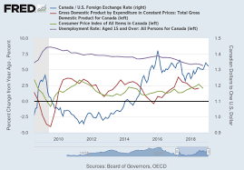
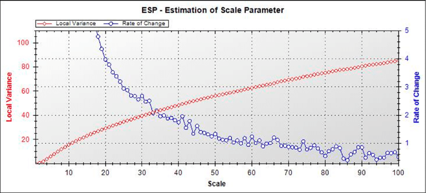
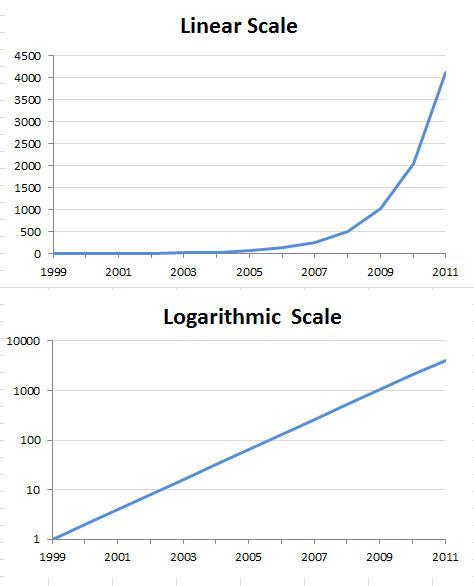

Cairo explains that visualizing the index by using an index origin and calculating the percentage change from that origin can illuminate change over time. By using applying the index origin and visualizing the change it becomes clear the proportion in which a certain statistic was influenced over period of time by one event.
This graph shows the percentage change from the average that was set regarding exchange rates. By visualizing the index and using it to show the change it is easy to see when exchange rates either increased or decreased based on whether or not the line falls below 0%.
Another way to view change over time is to calculate the change rate. To calculate the change rate you divide the next data in the set by the previous data and you get the percentage that the data is increasing or decreasing. This allows the viewer to see the how much data is actually increasing or decreasing in proportion instead of having to assume the amount of change from a raw data graph
When you look at the red line in this graph it is easy to see that the data is continuing in a positive direction. However, it is not so easy to see the change in the rate it is increasing over time. By calculating the rate of change, we can see that while the red line is still going upwards the rate at which it is going up is continously slowing down.
Log transformations make it easier to see exponential changes in data. When you look at a linear graph that displays the exponential growth of anything at a low rate it will be hard to notice change until the subject grows enough to appear on the graph. Using a log scale allows a graph to have a y axis that follows the exponential growth of the subject. This allows the graph to display a clearer visualization of the subjects growth over time by making changes more visible.
In the linear scale it is almost impossible to notice in change until about the year 2005. The linear scale is making it look as if there is no change when if the first data was 1 and it was multiplying at a rate of 2 or 3 there would be a big change in proportion to what is shown. The logarithmic graph helps to illustrate this by creating a scale that follows nearly the same rate of growth as the data in order to show the change clearly.
I met the requirements by listing and describing three methods Cairo talks about. I also included graphs of each method in comparison to a graph of raw data.